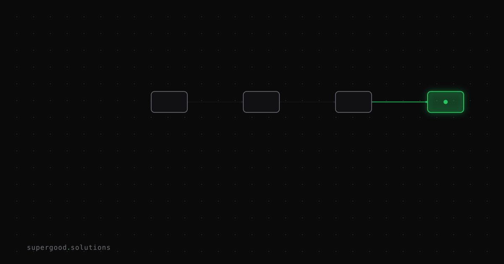

AI, Actually: Open vs. Closed Models — What You're Actually Trading Away
TL;DR: Choosing between open-weight and closed-API models is a business decision, not a religion. The real tradeoff is who controls your data, your costs, and your exit — not which model gets a higher benchmark score.
Key Insight
By mid-2026 the capability gap between open-weight models (Llama 4, DeepSeek, Mistral, Gemma) and closed frontier APIs (GPT-5, Claude Opus) has narrowed to single digits on most benchmarks. That changes what the decision is actually about. You're no longer choosing between "good enough" and "best." You're choosing between a utility bill and an infrastructure investment — and between a vendor who can read your data and one who can't.
Neither answer is automatically right. But buyers who default to the big closed API because it's "easier" are making a cost and sovereignty choice without realizing it.
Why Teams Miss This
The sales motion for closed APIs is frictionless. You sign up, paste an API key, and get a response in three minutes. It feels like a neutral technical choice. It isn't.
What you're actually agreeing to when you call a closed API with your production data:
Cost exposure. Token pricing scales with volume. A workflow that costs $200/month in a pilot can cost $20,000/month in production. Unless you've done the math at 100x scale, you don't know your unit economics yet.
Vendor lock-in. Prompts, tool schemas, and agent architectures get optimized for one provider's quirks. Switching later requires a re-engineering effort most teams underestimate by a factor of three.
Data in transit. Every call sends your payload to a third-party data center. Most enterprise closed-API agreements include a "we won't train on your data" clause — but that's a contract, not a technical guarantee. For regulated industries (healthcare, finance, legal), this is a compliance conversation, not a product preference.
Deprecation risk. GPT-3.5 was deprecated. GPT-4 base was deprecated. API models get sunset on the provider's timeline, not yours. If a prompt-tuned workflow depends on a specific model version, you're on borrowed time.
How to Actually Do It
The right mental model is a two-layer stack, not a single model choice.
Layer 1 — Your heavy-lifting tasks: Complex reasoning, long-context synthesis, novel agent behaviors. These are where frontier closed APIs still earn their price at moderate volume. Use them here.
Layer 2 — Your repetitive, high-volume tasks: Classification, extraction, summarization, routing, structured output. These are open-weight territory. Run them locally, in your VPC, or via a self-hosted inference endpoint. At scale, the cost difference is not marginal — it's an order of magnitude.
A practical decision tree:
Is this task high-sensitivity data (PII, financial records, legal docs)?
→ Open-weight, self-hosted. Full stop.
Is this task high-volume and well-defined (>10k calls/day)?
→ Open-weight wins on economics. Benchmark a 7B–70B model first.
Is this task a novel reasoning problem or frontier agentic behavior?
→ Closed API is currently the better bet. Revisit in 6 months.
Is this a pilot with undefined scale?
→ Closed API to learn. Set a volume trigger ($X/month) that forces you to revisit.For self-hosting, the operational floor has dropped. Ollama lets a developer run Llama 4 or Mistral locally in under ten minutes. Hugging Face's Inference Endpoints give you a managed VPC deployment without building the serving layer yourself. The "open-weight is too hard to operate" objection was true in 2023. It's not the whole story in 2026.
For the data-privacy angle specifically: if your workflow touches anything you'd be uncomfortable explaining to a regulator, the architecture question isn't "which API?" — it's "can we guarantee this data doesn't leave our environment?" Only self-hosted open-weight models let you answer yes without a legal clause as the backstop.
What We've Learned
Run the volume math before you commit to an architecture. Take your pilot call count, multiply by 100, and price it against both a closed API and a hosted open-weight option. If the closed API number makes you wince, you have your answer. If it doesn't, the convenience premium may genuinely be worth it — but now you're making that call consciously.
The teams that get burned aren't the ones who chose wrong. They're the ones who never chose at all — they just pasted an API key and kept going until the invoice arrived.
Sources
- Meta Llama Models — llama.meta.com
- Mistral AI Open Models — mistral.ai/models
- Ollama — local open-weight model runner
- Hugging Face Inference Endpoints — huggingface.co/inference-endpoints
- Open LLM Leaderboard — Hugging Face
- DeepSeek Models — deepseek.com
Have a specific workflow in mind?
Bring it to a Quick Scan — a live working session where we'll tell you honestly whether it should be an agent, a workflow, or left alone, before you spend a dollar building it. You get 3 prioritized recommendations on the call, a one-page summary after, and the $500 credited toward any engagement within 30 days.
Get new posts + practical agent-ops notes
One email when something new goes up. No nurture sequence, no spam — unsubscribe whenever you want.